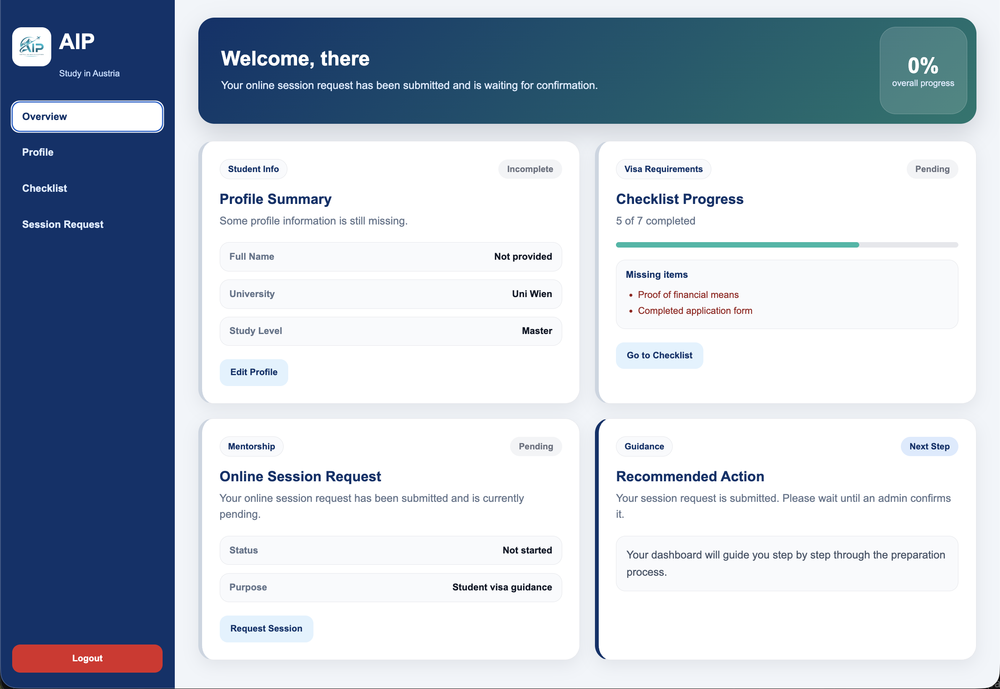
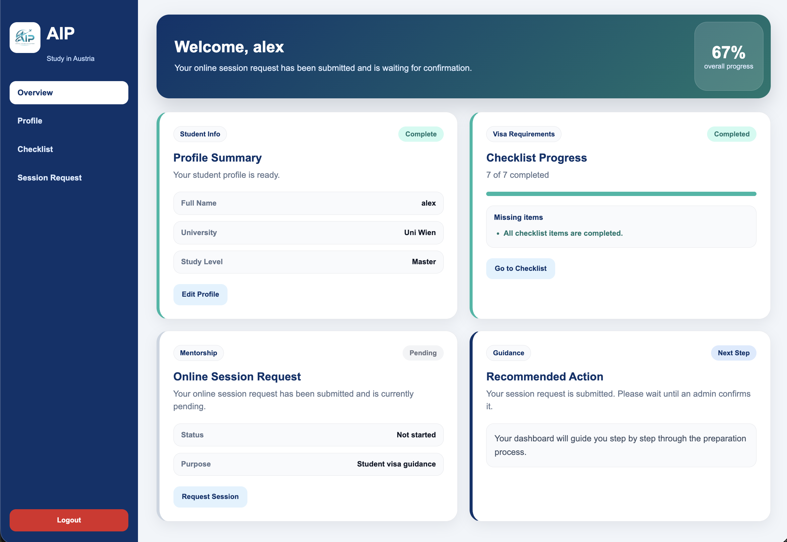

University project, Jun 2026
Austria Immigration Platform
A full-stack web app that guides international students through studying and relocating to Austria.
- Type
- University project
- Semester
- 2
- Focus
- Full-stack web development
- Status
- Completed
Overview
Developed as a second-semester university project, this platform simplifies the process of studying and relocating to Austria. It gives structured guidance on university applications, student visa procedures and relocation requirements.
The problem
Moving to Austria as an international student means working through bureaucracy spread across many government websites, in German, with requirements that change depending on your country of origin. There is no single place that walks you through the whole process, from university application to visa to housing.
This platform is a central place to submit and track immigration-related requests, so nobody has to start from zero every time.
What I built
A full-stack web application with user authentication and a complete request management system. Users register, log in and manage their own immigration requests.
- User registration and login with session-based authentication
- Create, view, update and delete requests (full CRUD)
- Dynamic status tracking, so each request shows its current state
- Clear error messages for the user
- A separate frontend and backend that talk through a REST API
Technical details
The project is split into a frontend and a backend folder. The backend is a Node.js and Express.js server that handles the API routes, authentication and request processing. The frontend is vanilla JavaScript, HTML and CSS, with no frameworks.
- REST API endpoints for authentication, request creation, updates and deletion
- Session-based authentication that keeps the user signed in across page loads
- Structured JSON responses, parsed and rendered dynamically in the frontend
- Form validation and error feedback on both sides
What I learned
This was my first full-stack project. The biggest lesson was seeing how data actually flows through an application: a form submission leaves the browser, hits an Express route, gets processed and comes back as a JSON response.
- How to design and connect a REST API between a frontend and a backend
- How to build session-based authentication from scratch, without an auth library
- How to debug across two layers (frontend JavaScript and backend Node.js) at once
- How to structure a project with separate concerns from the start
Screens

